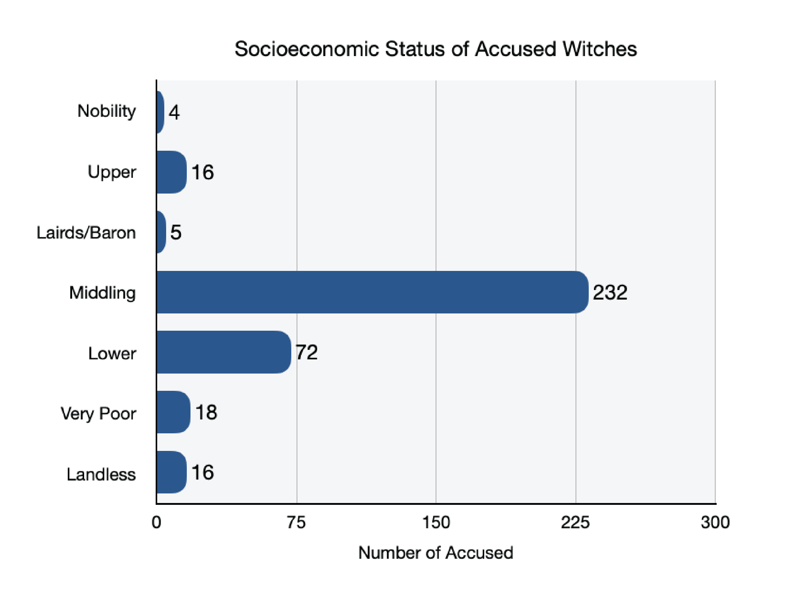

Introduction
In 1590 when King James VI’s ship was caught in a storm thought to be caused by the work of witches, witchcraft accusations increased around Scotland. While the King was starting to think more negatively about witches, all around Scotland the church was spreading fear about the devil. The fear of the devil extended to include people who were thought to be involved with the devil, witches; people who were thought to have made a pact with the devil in order to get their powers. This fear of the devil spread like wildfire around Scotland seeping into even the smallest settlements, causing neighbors to look to each other in search of purging anyone related to the devil. Accusation started with “the ‘neighborhood witch,’” who would be denounced for causing harm to “community members, usually after quarrels that led to verbal abuse and curses,” (Martin 7) or after a negative event in the settlement like the crops failing. People like Isabel Young, who was a married mother with four sons and was of middling socioeconomic status, was tried and executed for witchcraft in 1629. Like most people at the time her family was deeply “intertwined” in the lives of other families in their town through “webs of debt, renting, borrowing, and quarreling,” but unluckily for Isabel around “half” of the people in her town, including the richest man, turned against her (Ring et al. 13). She was accused of “conducting a protective magic ritual on her cattle in front of [her] barn,” (Ring et al. 13), property damage (Ring et al. 14), and attempted murder of her husband (Ring et al. 15).
There were many accusations against other accused people like the ones against Isabel, the most common types of accusations were about Charming, Sorcery, Folk Healing, and Neighborhood Dispute. Throughout our sources, there were lots of examples of accused people like Isabel who were of middling or poor socioeconomic status (e.g., class, occupation) that were executed, in fact they were the majority. In contrast, it was rare for a person of high socioeconomic status to be accused at all, and then executed. This is one of the reasons that we are looking for a correlation between socioeconomic status and bias and their effect on the amount of accusations and outcomes of trials (e.g., execution, banishment, release). Our goal with this project is to study this correlation, specifically how socioeconomic status of an individual and biases of the time affected witch accusations and trial outcomes in 1563-1736 Scotland. Our analysis uses the dataset The Survey of Scottish Witchcraft by Julian Goodare, Lauren Martin, Joyce Miller, and Louise Yeomen completed in 2003. This dataset contains hundreds of entries on alleged witches and their trials, listing important details such as socioeconomic status, occupation, and outcomes.
Overall, most of our sources supported the same concept: economic status of the area, socioeconomic status of the accused, behavior of the accused, and occupation of the accused may have affected the accusations, trials, and outcomes of the Scottish Witches. Many sources found that when the weather was good, crop yields were high, and the economy was doing well, then the number of people accused of being witches went down. But, when the weather was poor and the economy was down, more people were accused of being witches because witches were thought to control weather. (Oster) Additionally, witch hunting was encouraged by the church, because of the fear of the devil and its relationship with witches. King James VI also encouraged witch hunting because of his experiences with witches and their relationship with the devil. Both the church and the King left most trial outcomes up to the local ministers, which allowed the minister’s personal beliefs and bias to affect the trials. It was found that most witches were of poor or middling socioeconomic status and were having trouble with neighbors, arguments about livestock, stress, etc., causing the ministers to not look favorably on the witches and leading to worse outcomes. (Henderson) (Martin)
The biggest contradiction we found in our sources was related to weather: some of our sources suggested that good weather increased the number of trials, because a better economy–caused by better weather–led to more money to pay for witch trials (Oster). Other sources suggested the opposite, noting that a worse economy caused by worse weather led to more hatred and thus to more witch trials (Cornelius). Overall, all of our sources seem to agree that socioeconomic status and similar characteristics, such as being a servant or midwife, could have affected accusations and outcomes. Other scholars might agree or be neutral on this topic because there has not yet been much research according to Goodare. This means that this correlation has not been explored in enough detail to solidify causation, causing us to have some questions that couldn’t be answered. For example, does the socioeconomic status of the accused or other similar characteristics actually affect the accusations and outcomes? Or, was some other factor in play that still needs to be identified through studying the dataset? Why do most people focus on the supposed connection between witches and the devil and not look at other characteristics? Because our topic has not been researched deeply, we will need to investigate the dataset and other sources to make these connections.
This project is important because it adds a socioeconomic perspective on the Scottish Witchcraft
trials which is a lens that has not been deeply explored yet. After diving into our sources and
dataset, it became very apparent that the amount and level of research with this viewpoint is
scarce. As previously stated, the crop yield has been said to have affected the economy of
Scotland. According to a number of sources, when crops flourished, there were far less
accusations. This reasoning behind the accusation goes to show the bias involved throughout the
witchcraft trials. This project's goal is to help others understand the unjust motives and
reasoning when it comes to the accusation of particular people, whether that be occupation,
class, economic status of the area, or their personal behavior. Elements relating to the economy
of Scotland and the witches is one particular form of bias that we have explored in regards to
Witchcraft in Scotland. Socioeconomic impacts have not often been taken into account when
researching and understanding the accusations as well as the prosecution of Scottish witches,
making this perspective unique. Furthermore, there is a larger idea connected to this viewpoint;
the correlation between a struggling economy and the increase of discrimination towards
particular groups of people.
Examples of Witches
Helen Isbusterr (1635)
Status: Very Poor
Occupation: Vagabond
Accused: Demonic, Maleficium,
White Magic, Charming,
Sorcery, Murder.
Outcome: Guilty. Executed.
Story: Helen was a very poor
vagabond from Orkney.
She was accused of witchcraft after being in the wrong place a few too many times. Helen had
received a few accusations over the years and was finally found guilty and executed in 1635.
Bessie Graham (1650)
Status: Middling
Occupation: Healer
Accused: Folk Healing, Charming,
Maleficium, Neighborhood
Dispute.
Outcome: Guilty. Executed.
Story: Bessie was from Dumfries and
worked as a
professional healer with her husband, they were well paid. They had been performing folk healing
for
years, and getting accused of witchcraft for years before their trial. But finally her
settlement
had enough and came forward with claims against the couple. Bessie was pronounced guilty in 1650
and
was executed with her husband, Thomas Paton.
Beatrix Leslie (1661)
Status: Lower
Occupation: Midwife
Accused: Demonic, Charming, Folk
Healing, Maleficium, Sorcery
Neighborhood Dispute, implied by another witch.
Outcome: Guilty.
Executed.
Story: Beatrix was
from Newbattle, Edinburgh she was married and thought to be an older woman with a son. She was
implicated by another witch during a year of panic and witch hunts with no previous accusation
before her implication. Once she was accused her people in her settlement turned against her and
came forward with all these claims for her accusation. She was pronounced guilty and executed
1661.
Timeline
As shown in the timeline, the number of accused people per year noticeably goes up and down. There are many reasons for these inconsistencies. One being the crop yield of that particular year. Multiple researchers hypothesize that there is a correlation between low crop yield and an increase in witch accusations. This shows that there is some validity behind the theory that the economy is strongly related to the bias involved in the witch trials. Another explanation for this variation is due to who held power during that time period. Furthermore, there was a vast amount of religious bias in regards to the accusation of said witches. The leaders during each particular time period had a lot of impact on how harsh and abundant the accusations were each year. To be specific, Scottish Presbyterians were substantially more active in persecuting alleged witches during periods when they were excluded from power (Kulkarni, 1). This timeline allows you to see the drastic fluctuation from year to year during the Scottish Witchcraft trials.
Witches

Through this map we can see the vast amount of people that were accused as witches in Scotland.
Additionally, you can clearly see that the majority were of middling status (blue witch icon),
and very little were of higher statuses (yellow witch icon).
It was made clear in our research that during this time period the majority of Scotland was
poor, relying heavily on successful agriculture harvests. This was also a time when people
renting land from Husbandmen (e.g. lesser landowners) as free tenants (e.g. cottars and
grassmen) made up the majority of the working population, and these landlords had considerable
control over their tenants. Additionally, Society in the burghs were headed by wealthier
merchants, who often held local office. Most people in this time relied on local production of
their needs causing ties between populations in a settlement to be strong through familiarity
and debt. Once the fear of the devil and a witch’s relationship with it spread throughout
Scotland people in these settlements began to accuse eachother of witchcraft. But, whether these
accusations were because the person was a “witch” or because there was bias or grudge involved
is what we are looking into. Through our sources and looking through the dataset we have found
that most accusations fall into a few similar categories: Charming, Sorcery, Folk Healing, and
Neighborhood Dispute.

Also, this map shows that the accused people possessed many similar characteristics in their
accusation.You can see the variety of accusation characteristics and how they overlap between
the different cases. This map especially highlights that the majority of people were accused of
charming (teal witch icon), neighborhood disputes (purple witch icon), and folk healing (yellow
witch icon) from this section of the database.
For most people accusations stacked up over time, their accusers could be anyone from their settlement: neighbor, friend, even a family member. While the speed of this process might have changed depending on the settlement and the years (like years of panic), in some places an accused person might not have been tried as a witch until 2-10 years after the initial accusation. One reason accusations were made slowly over time without action was because “local communities could live with witches. People might use charms to protect themselves,” (Goodare, 298). Additionally, most “witchcraft accusations grew out of decades of quarrels and curses between neighbors'' (Martin, 9). Because most people who were accused “had little valuable property, and trials were costly,” (Christian, 3), likely lack of money was also a factor in causing accusations to stack up over time as well. Lastly, it also was shown that outside of years of panic a witch “needed time to build up a reputation,” (Goodare, 292).
Overall, most accused people were of middling or lower status, with very poor being the third highest accused. The difference between the amount of middling status people; 232, and nobility status people; 4, is shocking. Especially because not every accused person in our dataset had their socioeconomic status recorded. It was overall found that while most accused people were of middling and lower status, making them “integral members of their local communities”, this is likely because “high status people either avoided denunciation or fought off charges at an early stage,” (Martin, 11). It was possible that people were accused during times of economic problems, such as a famine, that “could not be tackled directly, witch-hunting was perhaps a displacement activity,” to try to solve the problem a different way (Goodare, 293). Additionally, a womens behavior was also likely to get them accused of witchcraft because “aggressive and insulting behavior was the kind of thing people expected from witches,” (Goodare, 298). Furthermore, for people like Bessie Graham who practiced folk healing, their business was turned “dangerous and illegitimate,” by the church because they “regarded it as ‘superstitious’,” (Goodare, 303). Suddenly, their settlement who benefited from their business turned against them and got tried for witchcraft. Based on these explanations, we see that witch accusations had multiple factors, such as status, occupation, and bias, that affected accusations making these events based off of more than witch hunts.
Correlations
This visualization is helpful to show the correlation between certain words like “servant”, “middling”, and “very poor” with words like “executed” and “guilty”. The thicker the line, the more relation the words have. This shows that the accused individual’s particular occupation or status has much to do with how they are prosecuted. It is clear through this visual analysis that socioeconomic characteristics do have a relationship with the result of the accusation and prosecution.
Conclusion
The Survey of Scottish Witchcraft, a database completed in 2003, contains information on almost 4,000 people who were accused of witchcraft between 1563 and 1736. Our analysis of the dataset shows that low status people, such as Helen Isbusterr and Bessie Graham, were more likely to be accused and executed than people in the Upper socioeconomic status. In fact, being poor increased your chances of being accused and executed; 93% of the people accused were of low status, compared to 7% of the upper. Most likely wealth allowed upper status people to avoid denunciation or fight the charges early in the process. Lower status people were often accused because of their low status, personal behavior, occupation, and ill will from others, as well as economic problems caused by issues such as famine. In the end, the witch trials were about more than hunting witches, they were about blaming someone for the problems of society.